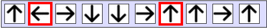

Votre objectif est de trouver une séquence de déplacements permettant de faire sortir le carré bleu du labyrinthe.
Les déplacements sont décrits par des flèches. Vous pouvez réordonner les flèches comme vous le souhaitez, sauf les deux flèches encadrées en rouge qui sont fixées. Pour déplacer une flèche, appuyez dessus, glissez-la vers l'endroit où vous voulez l'insérer, puis relâchez le bouton de la souris. Une fois la séquence prête, vous pouvez visualiser les déplacements en cliquant sur le bouton « Exécuter ».
À la fin des déplacements, si le carré bleu est sorti du labyrinthe, vous validez l'exercice. Sinon, recommencez autant de fois que nécessaire. Vous ne pouvez pas perdre de points sur cette question.
|
|
|
|

Il s'agit d'ordonner des instructions de sorte à écrire un programme qui déplace le carré bleu vers la sortie.
Cela peut sembler un programme étrange, car on ne fait pas le chemin le plus rapide. En effet, comme on est obligé d'aller à gauche comme deuxième instruction, il faut commencer par s'éloigner avant d'aller à la sortie. Cela peut s'expliquer par exemple s'il y a un autre castor dans le labyrinthe avec lequel il ne faut pas avoir d'accident.